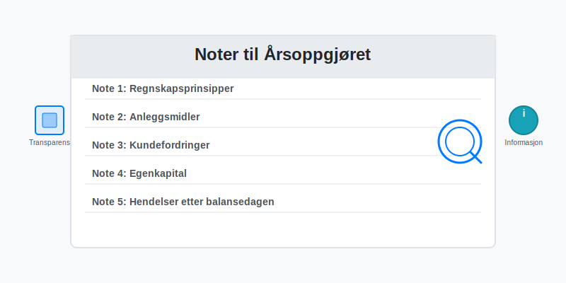
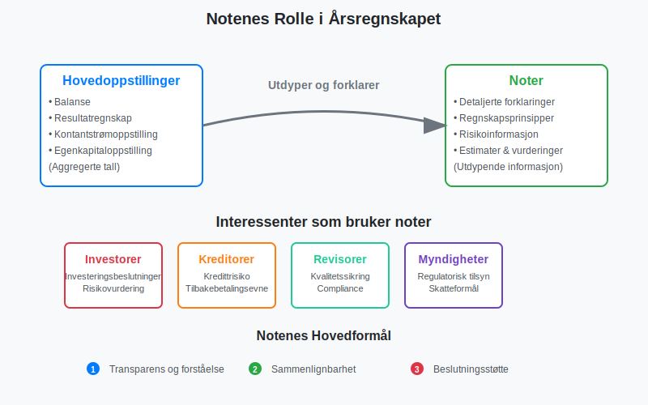
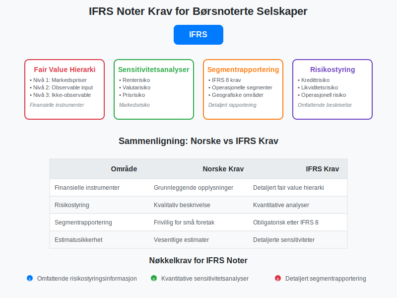
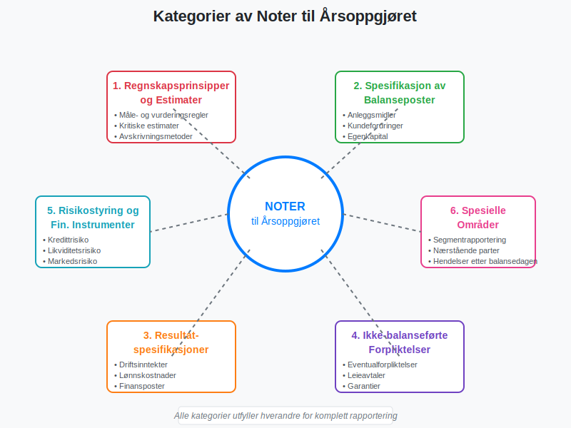
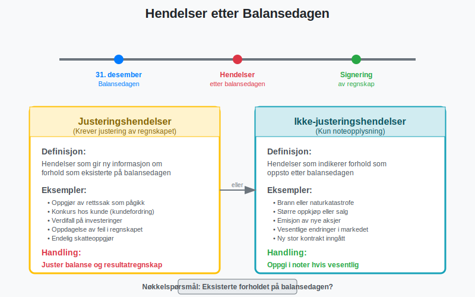

Noter er en integrert del av årsregnskapet som gir detaljerte forklaringer og tilleggsinformasjon til tallene presentert i balansen, resultatregnskapet og kontantstrømoppstillingen. Noter til årsoppgjøret er ikke bare en lovpålagt rapporteringskomponent, men også et kritisk verktøy for å sikre transparens og forståelse av selskapets økonomiske stilling og resultater.
Se også vår artikkel om årsberetning for en fullstendig oversikt over årsrapportens struktur og innhold.
I norsk regnskapssammenheng reguleres noter primært av bokføringsloven og regnskapsloven, samt god regnskapsskikk. For børsnoterte selskaper gjelder i tillegg IFRS-standarder som stiller enda strengere krav til noteopplysninger.

Hva er Noter til Årsoppgjøret?
Noter til årsoppgjøret er tekstlige forklaringer og numeriske spesifikasjoner som utdyper og supplerer informasjonen i de primære regnskapsoppstillingene. De fungerer som en bro mellom de aggregerte tallene i balansen og resultatregnskapet og den detaljerte forståelsen som interessenter trenger for å ta informerte beslutninger.
Formål med Noter
Noter tjener flere kritiske formål i finansiell rapportering:
- Oppfyllelse av lovkrav: Sikrer compliance med regnskapsstandarder og lovgivning
- Økt transparens: Gir innsikt i regnskapsprinsipper, estimater og vurderinger
- Risikoinformasjon: Beskriver finansielle og operasjonelle risikoer
- Sammenlignbarhet: Muliggjør sammenligning mellom perioder og selskaper
- Beslutningsstøtte: Gir investorer og kreditorer nødvendig informasjon

Lovpålagte Krav til Noter
Regnskapslovens Krav
Regnskapsloven § 7-1 til § 7-45 spesifiserer detaljerte krav til noteopplysninger. Kravene varierer basert på selskapets størrelse og type:
Store Foretak
Store foretak må oppgi omfattende noteinformasjon, inkludert:
- Regnskapsprinsipper: Detaljert beskrivelse av anvendte prinsipper
- Estimatusikkerhet: Områder med betydelig estimatusikkerhet
- Segmentrapportering: Informasjon om ulike forretningsområder
- Risikostyring: Omfattende beskrivelse av finansielle risikoer
Små Foretak
Små foretak har reduserte notekrav, men må fortsatt oppgi:
- Grunnleggende regnskapsprinsipper
- Vesentlige poster i balanse og resultatregnskap
- Eventualforpliktelser og pantstillelser
IFRS-krav for Børsnoterte Selskaper
Børsnoterte selskaper som følger IFRS har enda strengere notekrav, inkludert:
- Fair value-hierarki for finansielle instrumenter
- Sensitivitetsanalyser for markedsrisiko
- Detaljert segmentrapportering etter IFRS 8
- Omfattende risikostyringsinformasjon

Kategorier av Noter
Noter til årsoppgjøret kan kategoriseres i flere hovedgrupper basert på deres innhold og formål:
1. Regnskapsprinsipper og Estimater
Disse notene beskriver de grunnleggende prinsippene som ligger til grunn for regnskapet:
- Måle- og vurderingsregler for ulike poster
- Periodiseringsgrunnlag og inntektsføringsprinsipper
- Avskrivningsmetoder for anleggsmidler
- Valutaomregning for utenlandske datterselskaper
- Kritiske regnskapsestimater og vurderinger
2. Spesifikasjon av Balanseposter
Detaljerte oppdelinger av hovedpostene i balansen:
| Balansepost | Typiske Noteopplysninger |
|---|---|
| Anleggsmidler | Anskaffelseskost, akkumulerte avskrivninger, årets avskrivninger |
| Varelager | Vurderingsmetode, nedskrivninger, forsikringsverdi |
| Kundefordringer | Aldersfordeling, tapsavsetninger, sikkerhetsstillelser |
| Egenkapital | Aksjekapitalens sammensetning, egenkapitalbevegelser |
| Langsiktig gjeld | Forfallstidspunkt, rentebetingelser, sikkerhetsstillelser |
3. Resultatspesifikasjoner
Utdypende informasjon om resultatregnskapets hovedposter:
- Driftsinntekter fordelt på produktgrupper eller geografiske områder
- Lønnskostnader og antall ansatte
- Avskrivninger fordelt på ulike anleggsmiddelkategorier
- Finansposter spesifisert på rente- og valutagevinster/-tap

4. Ikke-balanseførte Forpliktelser
Informasjon om forpliktelser som ikke fremgår av balansen:
- Eventualforpliktelser: Potensielle forpliktelser avhengig av fremtidige hendelser
- Operasjonelle leieavtaler: Fremtidige leieforpliktelser
- Garantier: Produktgarantier og andre garantiforpliktelser
- Rettssaker: Pågående rettstvister med økonomiske konsekvenser
5. Risikostyring og Finansielle Instrumenter
Omfattende beskrivelse av selskapets risikoeksponering:
- Kredittrisiko: Maksimal eksponering og konsentrasjonsrisiko
- Likviditetsrisiko: Forfallsanalyse av finansielle forpliktelser
- Markedsrisiko: Rente-, valuta- og prisrisiko
- Sensitivitetsanalyser: Effekt av endringer i markedsparametere
Praktisk Utarbeidelse av Noter
Planlegging og Struktur
Utarbeidelse av noter krever systematisk planlegging:
- Identifiser notekrav basert på selskapets størrelse og regelverk
- Kartlegg vesentlige poster som krever noteopplysninger
- Samle nødvendig informasjon fra ulike avdelinger
- Strukturer notene logisk og brukervennlig
- Kvalitetssikre innhold og konsistens
Notenes Nummerering og Referanser
Noter nummereres vanligvis sekvensielt og refereres til fra hovedoppstillingene:
- Note 1: Regnskapsprinsipper
- Note 2: Kritiske regnskapsestimater
- Note 3: Segmentinformasjon
- Note 4-10: Balanseposter (eiendeler)
- Note 11-15: Balanseposter (gjeld og egenkapital)
- Note 16-20: Resultatposter
- Note 21-25: Øvrige opplysninger

Kvalitetssikring av Noter
Kvalitetssikring av noter er kritisk for å sikre korrekthet og compliance:
- Intern gjennomgang av alle noteopplysninger
- Konsistenssjekk mellom noter og hovedoppstillinger
- Lovkravssjekk mot gjeldende regelverk
- Revisorgjennomgang som del av revisjonsprosessen
Spesielle Noteområder
Segmentrapportering
For selskaper med diversifiserte virksomheter er segmentrapportering en kritisk del av notene:
- Forretningssegmenter: Basert på produkter eller tjenester
- Geografiske segmenter: Basert på geografisk lokalisering
- Segmentresultater: Inntekter, kostnader og resultater per segment
- Segmenteiendeler: Allokering av eiendeler til segmenter
Nærstående Parter
Transaksjoner med nærstående parter må opplyses detaljert:
- Identifikasjon av nærstående parter
- Beskrivelse av transaksjonstyper
- Beløp og vilkår for transaksjoner
- Utestående saldi ved periodens slutt
Hendelser etter Balansedagen
Vesentlige hendelser som inntreffer etter balansedagen, men før regnskapet signeres:
- Justeringshendelser: Hendelser som gir ny informasjon om forhold som eksisterte på balansedagen
- Ikke-justeringshendelser: Hendelser som indikerer forhold som oppsto etter balansedagen

Digitalisering og Automatisering av Noter
Moderne Verktøy for Noteutarbeidelse
Teknologiske løsninger forenkler noteutarbeidelsen betydelig:
- ERP-systemer med integrerte rapporteringsmoduler
- Spesialiserte regnskapsprogrammer med notemal
- Automatisk datauttrekk fra underliggende systemer
- Kvalitetssikringsverktøy for konsistenssjekk
XBRL og Strukturert Rapportering
For børsnoterte selskaper blir XBRL (eXtensible Business Reporting Language) stadig viktigere:
- Standardiserte tagger for noteopplysninger
- Automatisk validering av rapporterte data
- Forbedret sammenlignbarhet mellom selskaper
- Effektivisert regulatorisk rapportering
Utfordringer og Beste Praksis
Vanlige Utfordringer
Selskaper møter flere utfordringer ved utarbeidelse av noter:
- Kompleksitet i regelverk og standarder
- Ressurskrevende prosess med mange involverte parter
- Balanse mellom detaljnivå og lesbarhet
- Konsistens mellom perioder og med andre selskaper
- Tidspres i forbindelse med regnskapsavslutning
Beste Praksis for Noteutarbeidelse
For å sikre høy kvalitet på noter bør selskaper følge etablerte beste praksis:
Planlegging og Organisering
- Etabler tydelige roller og ansvar for noteutarbeidelse
- Lag detaljerte tidsplaner med milepæler
- Dokumenter prosesser og kvalitetssikringsrutiner
- Involver revisor tidlig i prosessen
Innhold og Presentasjon
- Fokuser på vesentlighet - unngå unødvendige detaljer
- Bruk klart språk som er forståelig for målgruppen
- Sikre konsistens i terminologi og presentasjon
- Inkluder relevante sammenligningsdata fra tidligere perioder
Kvalitetssikring
- Implementer flere kontrollnivåer i gjennomgangsprosessen
- Bruk sjekklister basert på gjeldende regelverk
- Utfør kryssreferansesjekk mellom noter og hovedoppstillinger
- Dokumenter alle vurderinger og beslutninger

Fremtidige Utviklingstrender
Økt Fokus på Bærekraft
Med implementeringen av CSRD vil noter til årsoppgjøret måtte inkludere mer omfattende bærekraftsinformasjon:
- Miljøpåvirkning og klimarisiko
- Sosiale forhold og menneskerettigheter
- Selskapsstyring og etikk
- Bærekraftsmål og måloppnåelse
Teknologisk Utvikling
Fremtidige teknologiske utviklinger vil påvirke noteutarbeidelsen:
- Kunstig intelligens for automatisk tekstgenerering
- Maskinlæring for identifikasjon av vesentlige forhold
- Blockchain for økt transparens og sporbarhet
- Sanntidsrapportering med kontinuerlig oppdaterte noter
Regulatoriske Endringer
Regnskapsstandardene utvikler seg kontinuerlig:
- Nye IFRS-standarder med utvidede notekrav
- Harmonisering mellom nasjonale og internasjonale standarder
- Økt fokus på risikostyring og transparens
- Digitale rapporteringsformater som standard
Konklusjon
Noter til årsoppgjøret representerer en kritisk komponent i moderne finansiell rapportering som går langt utover å være en lovpålagt formalitet. De fungerer som et transparent vindu inn i selskapets økonomiske virkelighet og gir interessenter den dybdeinnsikten som er nødvendig for informerte beslutninger.
For å sikre høy kvalitet på noter må selskaper investere i:
- Kompetente ressurser med dyp forståelse av regelverk
- Robuste prosesser for datainnsamling og kvalitetssikring
- Moderne verktøy som støtter effektiv utarbeidelse
- Kontinuerlig oppdatering på regulatoriske endringer
I en tid med økende krav til transparens og bærekraftsrapportering vil noter til årsoppgjøret fortsette å utvikle seg som et stadig viktigere kommunikasjonsverktøy mellom selskaper og deres interessenter. Selskaper som mestrer kunsten å utarbeide informative, presise og brukervennlige noter vil ha et betydelig konkurransefortrinn i kapitalmarkedene.
Gjennom systematisk tilnærming, fokus på vesentlighet og kontinuerlig forbedring kan noter til årsoppgjøret transformeres fra en byrdefull compliance-oppgave til et strategisk verktøy for å bygge tillit og støtte selskapets langsiktige verdiskaping.